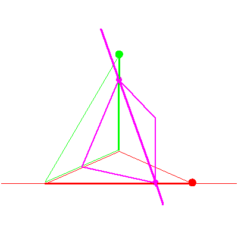

The line lying in a fixed plane in P3


The line lying in a fixed plane in P3 |
|
|  |
Consider the line that lies in a fixed plane, which also meets the two lines in our flags in P3. (The stationary flag and the moving flag.) We follow the solution line, as the moving flag moves. Points of intersection with the flags are indicated by the small magenta dots. We will also indicate the checker game played out in this sequence. |